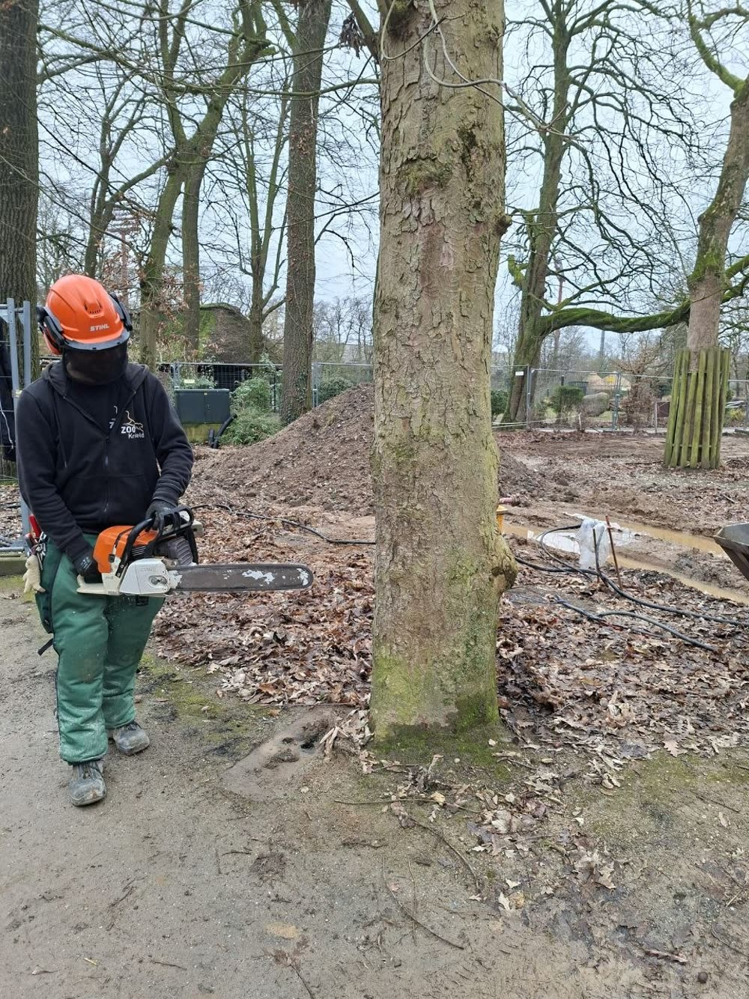
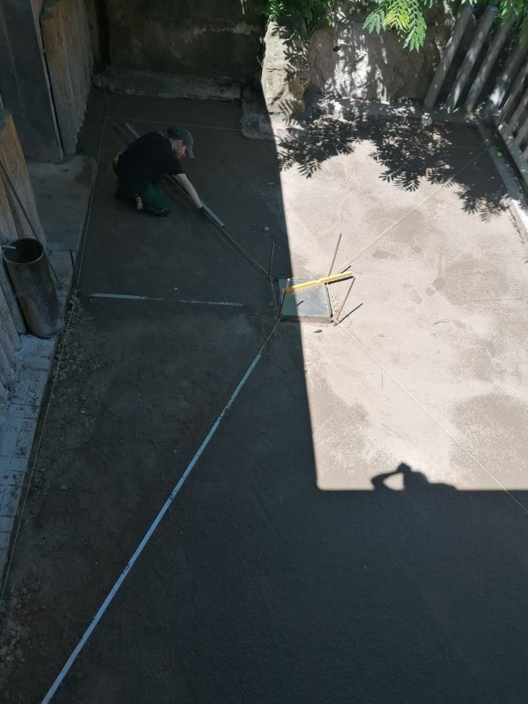
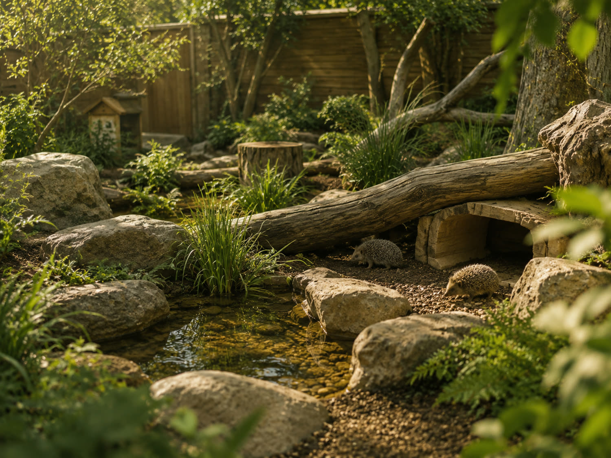
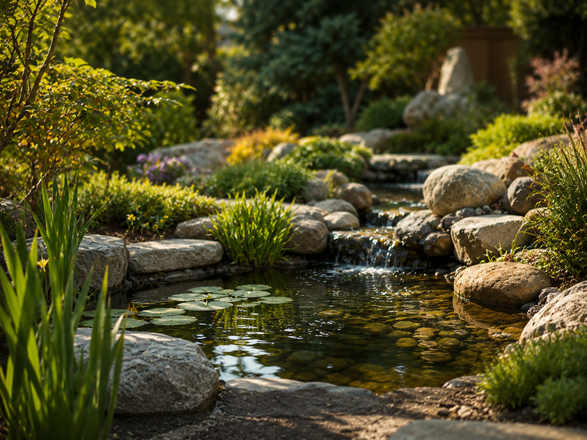

Baum & Gehoelz
Kleine Baumarbeiten
Kopfschnitt Weide, Obstbaumschnitt, Gehoelzpflege und Baumfaellungen bis 20 cm Stammumfang auf 1 m Hoehe.
Naturnahes Garten- und Landschaftswerk
Gartenpflege, Baumpflege im kleinen Rahmen, Pflaster, Teiche und Lebensraeume fuer Tiere. Ruhig geplant, sauber umgesetzt und nah an dem, was draussen wirklich funktioniert.
Start mit kleinen Auftraegen, ehrlicher Einschaetzung und handwerklicher Arbeit. Aus einer Idee wird Schritt fuer Schritt ein Betrieb.
Der Ansatz
Wildgruen Naturwerk steht fuer Aussenbereiche, die gepflegt wirken und trotzdem Charakter behalten. Wege, Pflanzen, Wasser, Holz und Stein sollen zusammen einen lebendigen Ort ergeben.
Zum Start liegt der Fokus auf ueberschaubaren Auftraegen: Rueckschnitt, Kopfschnitt an Weiden, Obstbaumschnitt, kleine Baumfaellungen, Pflasterarbeiten, Terrassen, Zaeune, Teichbereiche und Anlagen fuer Tiere.

Kopfschnitt Weide, Obstbaumschnitt, Gehoelzpflege und Baumfaellungen bis 20 cm Stammumfang auf 1 m Hoehe.

Funktionale Wege, kleine Flaechen, Treppen, Rollstuhlrampen und robuste Uebergaenge im Garten.

Innen- und Aussenanlagen, die Naturraeume nachempfinden: Struktur, Material, Schutz und Bewegung.
Leistungen
Das Angebot bleibt bewusst klar und nicht zu kleinteilig. Fuer jedes Projekt zaehlt die Lage vor Ort: Was ist sinnvoll, was ist machbar, was passt zum Garten oder zur Anlage?

Tobias Dio
Die vorhandenen Fotografie-Seiten zeigen den Blick fuer Licht, Struktur und Atmosphaere. Wildgruen Naturwerk uebertraegt diesen Blick nach draussen: nicht steril, sondern stimmig, nutzbar und lebendig.
Der Betrieb ist noch im Aufbau. Genau deshalb beginnt alles mit ehrlichen kleinen Auftraegen, sauberer Kommunikation und sichtbaren Ergebnissen.